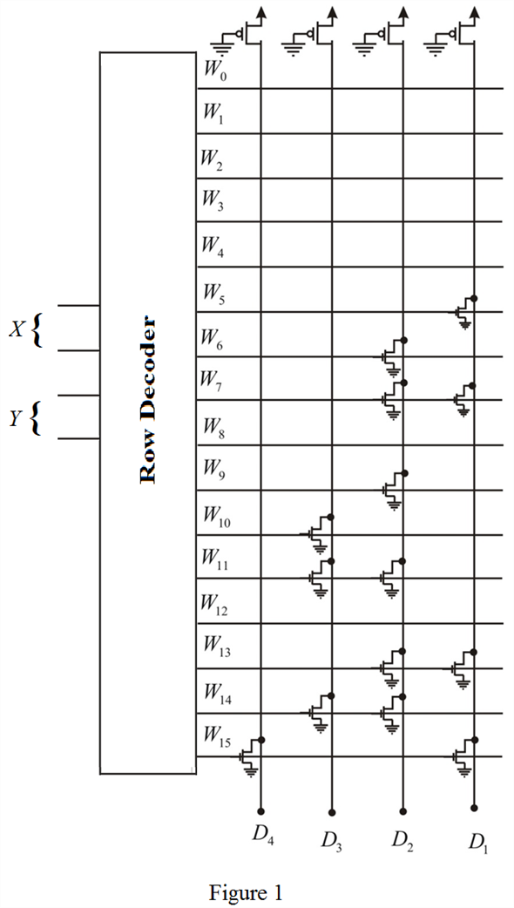
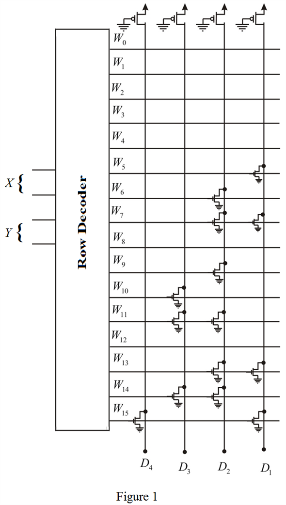

Draw the MOS ROM organized by 16 words  4 bits.
4 bits.

Thus, the designed circuit is shown in Figure 1.
Refer to Figure 15.30 in the textbook for a simple MOS ROM organized as 8 words 4 bits.
From the circuit diagram, the output is high if no word is selected. Thus, logically high must be corresponding to logic ‘0’.
No transistor represents logic ‘0’ otherwise logic ‘1’.
Write the truth table such that, the four bit output, is the multiplication of two bit, and .
Table 1
| X | Y | Z |
| 00 | 00 | 0000 |
| 00 | 01 | 0000 |
| 00 | 10 | 0000 |
| 00 | 11 | 0000 |
| 01 | 00 | 0000 |
| 01 | 01 | 0001 |
| 01 | 10 | 0010 |
| 01 | 11 | 0011 |
| 10 | 00 | 0000 |
| 10 | 01 | 0010 |
| 10 | 10 | 0100 |
| 10 | 11 | 0110 |
| 11 | 00 | 0000 |
| 11 | 01 | 0011 |
| 11 | 10 | 0110 |
| 11 | 11 | 1001 |
Draw the MOS ROM organized by 16 words 4 bits.

Thus, the designed circuit is shown in Figure 1.